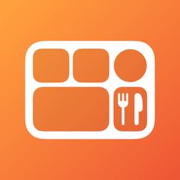

SVSD Lunch
School lunch menus & reminders
Know what's for school lunch
SVSD Lunch shows the lunch menu for any school in the Snoqualmie Valley School District, reminds you on the days your kid buys lunch, and answers Siri: "What's School Lunch today?"